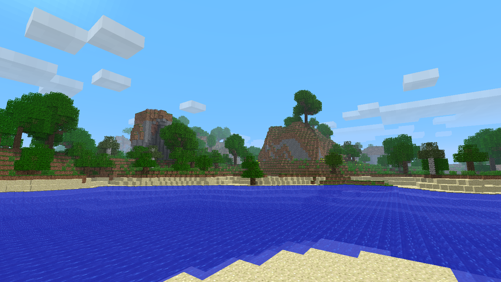
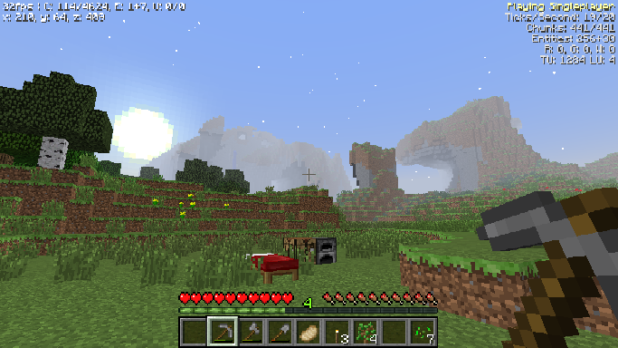

Previously known as Minecraft Old-School: ReDefault.
This is my first successful game that I created. There is an earlier version, made on Eaglercraft Beta 1.3, but it has many errors because back then, my dumbass didn't know how to code and just winged it. This version however is built on Eaglercraft Beta 1.7.3, and is the defenitive version that actually works. Its an extentsion mod for it, adding new features and stuff for you to find, craft and do in Eaglercraft, things such as new blocks, new mobs, and new items for you to play around with. This mod is inspired by my favorite Golden-Age mods, like Better Than Adventure, Cypress, Not-So Secret Saturday, and more.
Also known as Minecraft New-School.
A work in progress, this mod of Peyton's Eaglercraft Infdev aims to add new features and make Infdev modern-like while keeping some of the features from old-school versions of Minecraft, like the old healing system as an example. It's like a mishmash of both modern and old, all on your browser for you to enjoy!
Demo of a future game.